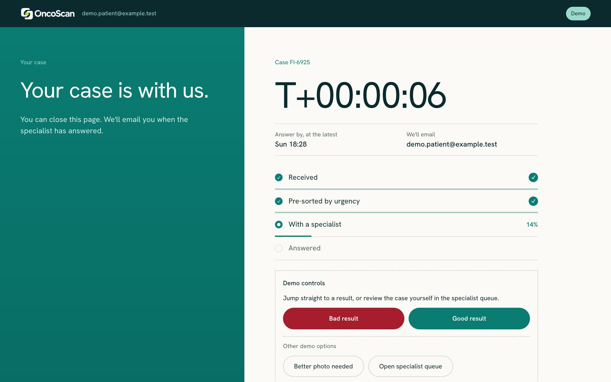
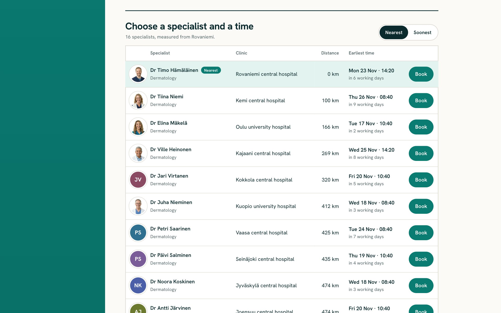

A specialist's answer in 24 hours.
24:00:00
A referral is sent to a specialist.
people are waiting for non-urgent specialist care in Finland.
No answer. No way to check.
Your photos and your story, in a short chat. From home.


Live statusClosest specialists first, with their next free time.

Example specialists500 km
Weeks
No status
0 km
24 hours
Live status